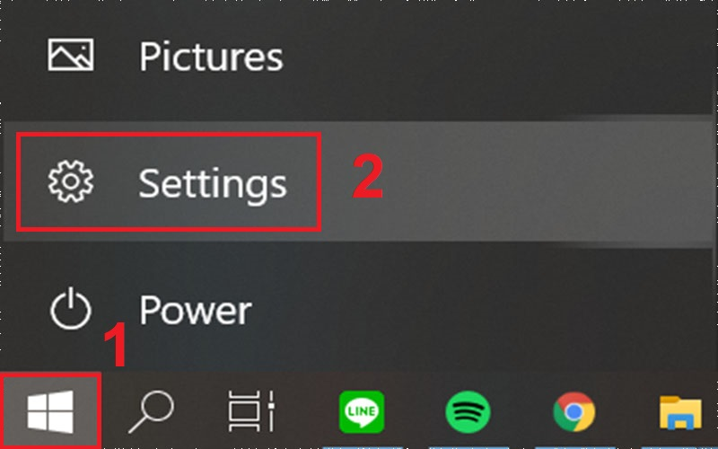

10+ cách giải phóng dung lượng ổ đĩa C trên máy tính
Ổ cứng của máy tính, laptop bị đầy sau một thời gian dài sử dụng là vấn đề thường gặp của nhiều người. 10+ cách giải phóng dung lượng ổ đĩa C trên máy tính, laptop Windows 10 và các ổ đĩa khác như ổ D hay E sẽ giúp bạn có thêm dung lượng để tải thêm được nhiều phần mềm, ứng dụng khác. Hãy theo dõi bài viết để biết thêm cách giải phóng dung lượng ổ đĩa C trên Windows 10 nhé!
1. Dọn dẹp thùng rác
Mỗi khi bạn xóa file bất kỳ trên laptop của mình, những file đó không bị xóa vĩnh viễn ngay lập tức mà sẽ được chuyển vào trong Thùng rác (Recycle bin) và như vậy là dung lượng ổ đĩa vẫn bị chiếm dụng bởi các file này. Hãy kiểm tra lại thùng rác xem có còn những file nào mà bạn cần không, nếu cần thì hãy Restore. Sau đó Ctrl+A > Nhấn Delete để xóa hết.
Restore những tập tin quan trọng trước khi dọn dẹp thùng rác
2. Phân tích ổ đĩa
Bên cạnh đó, bạn cũng có thể phân tích ổ đĩa nhằm giúp tìm ra dung lượng ổ đĩa đang được sử dụng để làm gì, cũng như lưu trữ những gì. Từ đó mới có những phương pháp phù hợp để xử lý những dữ liệu này. Ta sẽ sử dụng Windows Storage Settings (Công cụ phân tích không gian ổ đĩa của riêng Windows).
Bước 1: Nhấn Start > Chọn Settings.
Bước 2: Chọn System.
Bước 3: Chọn Storage > Cửa sổ sẽ tự động phân tích ổ đĩa C như hình dưới đây.
3. Gỡ bỏ các phần mềm, chương trình không cần thiết
Trong khi sử dụng, đôi lúc bạn sẽ vô tình tải những phần mềm, chương trình về máy tính mà có thể bạn không xài và nó lại chiếm nhiều dung lượng trên ổ đĩa C hoặc các ổ đĩa khác. Vậy nên hãy gỡ bỏ chúng để có thêm dung lượng cho những phần mềm, ứng dụng quan trọng khác.
4. Sử dụng USB, ổ cứng ngoài
Một giải pháp nữa là hãy sử dụng USB, thẻ nhớ hay ổ cứng ngoài để lưu trữ. Bạn có thể lưu những dữ liệu thường xuyên sử dụng trên các thiết bị này để tránh làm quá tải ổ cứng của máy. Ngày nay USB, thẻ nhớ hay ổ cứng ngoài có thể lưu trữ lên đến hàng chục GB mà giá cả thì không hề đắt chút nào.
Ổ cứng ngoài
5. Sử dụng các dịch vụ lưu trữ đám mây
Bên cạnh USB, ổ cứng ngoài thì lưu trữ đám mây cũng là một phương pháp tối ưu. OneDrive, Google Drive đều là những nền tảng cho phép bạn lưu trữ dung lượng dữ liệu lớn mà không mất phí, cũng như dễ dàng tải về khi cần miễn là máy của bạn có kết nối Internet.
OneDrive
6. Nén các file không sử dụng
Nếu bạn có nhiều file như tài liệu, hình ảnh… nhưng lại không thể xóa vì tính chất công việc, học hành… thì có thể nén chúng lại để giảm dung lượng lưu trữ cho ổ cứng của mình.
7. Xóa các file tải về trên thư mục Downloads
Thư mục Downloads nằm trong thư mục C:\Users\UserName. Vậy nên khi bạn tải các file về thì đều sẽ làm đầy ổ C. Nếu kiểm tra thấy có file không cần thiết thì bạn hãy nên xóa nó đi để giải phóng không gian cho ổ cứng của máy. Hoặc nếu muốn xóa hết, các bạn hãy nhấn tổ hợp phím Ctrl+A > Nhấn Delete.
Thư mục Downloads
8. Xóa các file tạm thời
File tạm thời là các tệp chứa dữ liệu do ứng dụng sinh ra để lưu giữ thông tin tạm thời. Đôi lúc, các tập tin tạm thời này không tự động được xoá đi gây lãng phí bộ nhớ, làm chậm máy tính của bạn.
Bước 1: Để tìm file tạm thời, ta nhấn tổ hợp phím Windows+R > Nhập %temp% > Nhấn OK.
Cách tìm file tạm thời
Bước 2: Tiếp đó màn hình sẽ hiện lên thư mục chứa các file tạm thời và khi đó bạn có thể nhấn tổ hợp phím Ctrl+A > Nhấn Delete.
Thư mục chứa file tạm thời
9. Xóa thư mục Windows.old
Windows.old là một thư mục chứa những dữ liệu các cài đặt phiên bản Windows trước. Nếu bạn chắc chắn rằng mình không cần đến dữ liệu các phiên bản Windows trước đó thì tốt nhất nên xóa thư mục Windows.old để giải phóng dung lượng trống ổ cứng Windows 10.
Bước 1: Nhấn chuột phải vào ổ đĩa C > Chọn Properties.
Mở Properties của ổ đĩa C
Bước 2: Trong mục General, nhấn chuột vào Disk Cleanup.
Disk Cleanup
Bước 3: Tiếp đến chọn Clean up system files.
Clean up system files
Bước 4: Tìm và tích chọn Previous Windows installion(s) rồi nhấn OK để xóa những dữ liệu của những phiên bản Windows trước đây.
Tìm và xóa dữ liệu của các phiên bản Windows trước
10. Xóa tài khoản Windows không sử dụng
Tài khoản Windows thường sẽ chiếm rất ít dung lượng trống. Nhưng tùy thuộc vào số lượng và kích thước file, thì tài khoản cũng có thể chiếm tới vài MB hoặc GB dung lượng trống. Tóm lại nếu thấy không cần thiết, bạn hãy xóa tài khoản đi vì bạn có thể tạo lại một tài khoản mới bất cứ khi nào mình muốn.
Bước 1: Để xóa một tài khoản người dùng, mở ứng dụng Settings > chọn Accounts.
Chọn mục Accounts trong Settings
Bước 2: Chọn Family & other people. Chọn một tài khoản rồi click chọn nút Remove.
Xóa tài khoản
11. Tắt tính năng Hibernate (Ngủ đông)
Hibernate (Ngủ đông) là một tính năng gần giống với Sleep. Tuy nhiên ở chế độ Hibernate, dữ liệu của phiên làm việc hiện tại sẽ được lưu trên ổ cứng, máy tính sẽ không sử dụng điện, tắt hoàn toàn như khi bạn shutdown máy tính. Tắt tính năng này đi sẽ ngăn chặn việc lưu dữ liệu vào ổ cứng của máy.
Bước 1: Chọn biểu tượng ^ (Show hidden icons) trên thanh tác vụ > Nhấp chuột phải vào biểu tượng sạc pin > Chọn Power Options.
Mở Power Options
Bước 2: Chọn Choose what the power button do.
Chọn Choose what the power button do
Bước 3: Nhấn chuột vào Change settings that are currently unavailable.
Chọn Change settings that are currently unavailable
Bước 4: Bỏ tích ô Hibernate > Chọn Save changes để tắt tính năng này.

Tắt chế độ Hibernate

Nguồn cấp dữ liệu

Minh Khang
20/05/2023Bài viết hay đánh giá tốt
Trả lời